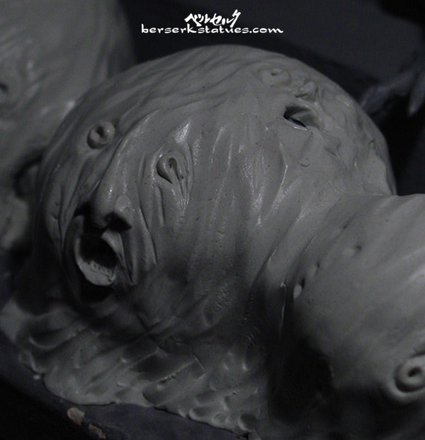

|
|
Guts: Black Swordsman with Custom Bird Disciple, Specters, and Diorama
- Guts
- by Field
- scale 1/8
- limitation < 300
- Bird Disciple (Bust)
- by Art of War
- scale 1/10
- limitation < 500
- project finished 12.2.06
- estimated value of kit alone: $300+
- pictures uploaded 12.3.06
- painter / custom sculptor: John Allred
When I decided to get this
Guts kit painted, I wanted to do something extraordinary. My birthday
was coming up in a week so I felt like I should treat myself and go all
out! So I thought of ways to spice up this kit, and that's when I
remembered I had a Bird Disciple resin bust, made by Art of War.
For those that aren't familiar with it, it's a bonus item that is supposed
to attach to the Guts: Black Swordsman action figure that was
released towards the beginning of AOW's Berserk merchandise
line-up. It's a neat little bust, but leaves much to be desired since it's
so small and looks more just like a random head than anything else. You
can see a stock picture of it
here.
Anyhow, so originally I asked John if he could have blood and intestines
pouring from his waist since there was no lower body. But instead, John
suggested that he could sculpt the lower half of the Bird Disciple's
body to make it a full figure. This was actually a REALLY good suggestion
because the Bird Disciple doesn't die by getting chopped in half,
but rather he dies from a sword swipe to the neck. And now with his whole
body intact, John would be able to show this.
So he made the general shape of the Disciple's body with aluminum,
and then covered it with putty to detail the curves and folds. Then he
used a real buckle to imprint the buckles on his cloak. After baking and
hardening the putty, he primed it, and painted it with a firey orange with
brown highlights so the blood and details will have a stronger contrast.
The blood spewing from the Disciple's neck was done with a kind of
epoxy to add some thickness. Very nice touch if you ask me! For the belt,
John just used a rubber-band that he glued into place and painted over.
For the Bird Disciple's weapon, he folded a piece of thin metal to
recreate the omega sign, and then used the teeth of an old hair comb for
all the spikes. What a brilliant idea! And of course, he chopped the
Disciple's weapon in half to follow the scene in the manga.
Then, there was the setting that we had to recreate. I sent a whole bunch
of pictures to John so he could get a good idea of where this battle took
place. After reviewing them, the most notable part of the scene was when
the tower came crumbling down soon after Guts kills the Bird
Disciple. So naturally, John and I wanted to portray this with the
diorama. For the stairs, John cut the wood pieces and then plastered it to
give it that stone look. He used balsa-foam to carve and sculpt the walls
and rubble. After carving all the details, he primed it and painted it as
you see down below. Also, if you look close, you can see feathers lying
around the stairs too. Originally, John was going to use real down
feathers, but the look and scale just didn't fit properly. So instead,
John took it upon himself to sculpt feathers to scale and just paint them
appropriately. What a cool guy. =)
And now we come to the specters... I really wanted the specters
to make an appearance in this diorama. I remember reading this part in the
manga and I was so terrified by these googly creatures/spirits that just
annihilated everything in their paths. I thought adding this extra feature
to the diorama would really add a nice Berserk touch. My only worry
was that the diorama might end up looking too busy, but I think it ended
up looking superb. John sculpted the specters out of putty, and
then carved in a total of ten faces. Some of them are facing the viewer,
and the others are facing Guts.
Lastly... is Guts himself! I've always been a fan of this kit
because it's dynamic, the cape is awesome, and Guts is equipped
with his cross-brow! Also, the details on the armor and accessories are
excellent so I was really pumped to see John paint this baby up. And as
expected, John did an amazing job. He used a piece of metal for the
crossbow string so it's more sturdy, and the crossbow is also removable if
I want to remove it for display (not like I ever would!). The sword
blood-work was also done with a kind of epoxy to add some texture and
depth. It looks absolutely gross and wonderful at the same time. =)
In the end, the diorama measures 14" x 12" x 14". A true masterpiece. John
never ceases to amaze me and this new kit is proof. He turned a simple kit
and bust into something of a completely different magnitude. This couldn't
have been a better birthday present. I am so incredibly happy! Thank you,
John, you are my hero!
(note: all pictures by John
Allred, himself)

In-Progress Pictures

Finished Pictures


|